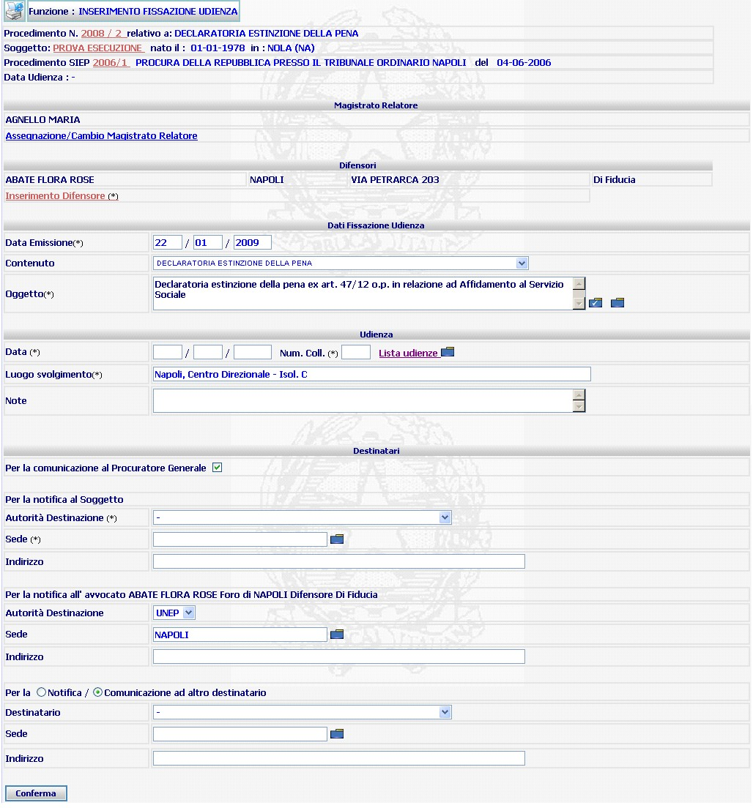
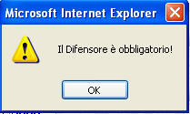
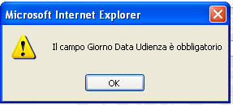

INSERIMENTO FISSAZIONE UDIENZA: La funzione consente l'inserimento della data di fissazione udienza nel procedimento emettendo contestualmente il decreto di fissazione udienza.
LE MASCHERE VIDEO
La funzione in esame viene realizzata attraverso la maschera seguente che è composta da campi obbligatori, opzionali e da più sezioni:
intestazione che contiene dati relativi a estremi del procedimento Sius, il nome e cognome del soggetto, gli estremi del procedimento SIEP;
magistrato relatore: la sezione consente l'assegnazione/cambio magistrato;
difensori: la funzione consente l'inserimento del difensore;
dati fissazione udienza;
udienza;
destinatari.

IN.B.: I campi da compilare obbligatoriamente sono quelli contrassegnati con un asterisco.
COME FARE PER ...
| Per visualizzare il dettaglio del procedimento Sius l'utente deve cliccare sul link relativo all'Anno/Numero del procedimento Sius evidenziato in rosso; |

| Per visualizzare il dettaglio del soggetto l'utente deve cliccare sul link relativo al cognome/nome del soggetto evidenziato in rosso; |

| Per visualizzare il dettaglio del procedimento Siep l'utente deve cliccare sul link relativo all' Anno/Numero del procedimento Siep evidenziato in rosso; |

| Per assegnare o cambiare il magistrato relatore l'utente deve selezionare il link assegnazione/cambio magistrato |
| Per inserire il difensore l'utente deve selezionare il link inserimento difensore |
| Per inserire i dati di fissazione, l'utente deve: |
- completare la data di emissione solo se diversa da quella del giorno corrente;
- verificare che il contenuto sia corretto. E' possibile selezionare un diverso contenuto dalla tendina se dovesse essere necessaria la modifica;
- verificare che l'oggetto sia stato selezionato, oppure inserirne uno attraverso la selezione delle apposite cartelline blu. Selezionando la lista predefinita contrassegnata
si aprirà l'elenco degli oggetti che fanno riferimento al contenuto selezionato, se invece si seleziona la lista predefinita
si aprirà la lista oggetti generale, appartenenti a tutti i contenuti.
| Per inserire la data di Udienza, l'utente deve: |
- selezionare la lista predefinita che consente di visualizzare il calendario delle udienze e selezionare la data corrispondente alla data udienza interessata attraverso:;
- verificare che il campo luogo di svolgimento sia compilato, in caso contrario occorrerà completarlo;
| Per le notifiche ai destinatari, l'utente deve: |
- per la comunicazione al Procuratore Generale lasciare la casella di spunta selezionata;
- per la notifica al soggetto compilare il campo autorità destinazione selezionandola dalla tendina, se il soggetto interessato è detenuto ed il luogo di detenzione è stato iscritto nel dettaglio del procedimento, il sistema presenterà i suddetti campi già precompilati. Compilare il campo sede selezionandola dalla lista predefinita
- per la notifica all'avvocato, il sistema presenta i campi già compilati.
N.B.: il sistema indica some sede UNEP competente per la notifica al difensore il comune del foro di appartenenza.
| Per la notifica/comunicazione ad altro destinatario, l'utente deve: |
- selezionare la voce interessata dalla tendina;
- compilare il campo selezionando la sede alla lista predefinita
- compilare il campo indirizzo (campo opzionale).
CAMPI
I dati che consentono di fissare una data di udienza in un procedimento sono i seguenti:
sezione: dati fissazione udienza
| NOME | DESCRIZIONE |
| Data emissione | il sistema presente il campo già precompilato con la data del giorno corrente, nel caso in cui la data di emissione del decreto dovesse essere diversa è possibile modificarla inserendo quella necessaria. |
| contenuto | il sistema presenta il campo precompilato con il dato già inserito nella fase di iscrizione, con possibilità di selezionare un diverso contenuto dalla tendina se dovesse essere necessaria la modifica. |
| oggetto |
il sistema presenta il campo
precompilato se l'oggetto è stato inserito nella fase di iscrizione, con possibilità di
modificarlo o inserirne uno nuovo attraverso la selezione delle apposite
cartelline blu liste predefinite. Selezionando quella contrassegnata
|
sezione: udienza
| NOME | DESCRIZIONE |
| Data | Compilare il campo
esclusivamente selezionando la data dalla
lista predefinita udienze
|
| luogo di svolgimento | il sistema presenta il campo precompilato solo se il dato è già stato inserito nella lista udienze, diversamente occorrerà completarlo indicando il luogo di svolgimento udienza |
| note | campo opzionale a testo libero. |
sezione: destinatari
| NOME | DESCRIZIONE |
|
per la notifica al soggetto |
|
| Autorità destinazione | compilare il campo selezionando la voce interessata dalla tendina |
| sede | compilare il campo selezionando la sede alla lista predefinita oppure inserirla digitandola |
| indirizzo | campo opzionale a testo libero |
| per la notifica all'avvocato | |
| Autorità destinazione | campo precompilato dal sistema. |
| sede | compilare il campo selezionando la sede alla lista predefinita oppure inserirla digitandola |
| indirizzo | campo opzionale a testo libero |
|
Per la Notifica /Comunicazione ad altro destinatario |
|
| Destinatario | compilare il campo selezionando la voce interessata dalla tendina |
| sede | compilare il campo selezionando la sede alla lista predefinita oppure inserirla digitandola |
| indirizzo | campo opzionale a testo libero. |
PULSANTI
Oltre al pulsante
 di stampa del contesto (videata)
di stampa del contesto (videata)
|
PULSANTE |
DESCRIZIONE |
|
|
A fronte di tale comando, il sistema visualizza la lista predefinita |
BOTTONI
Oltre ai comandi funzionali relativi al menù verticale sono presenti i seguenti comandi:
|
COMANDI |
DESCRIZIONE |
|
|
A fronte di tale comando, il sistema, dopo aver verificato la validità dei dati specificati, inserisce la data di udienza nel fascicolo. |
CONTROLLI
Azionando il bottone di  , il sistema verifica che i campi
obbligatori siano stati correttamente compilati.
, il sistema verifica che i campi
obbligatori siano stati correttamente compilati.
Se non riscontrerà incongruenze verrà visualizzata la maschera di dettaglio fissazione udienza, altrimenti presenterà i seguenti avvisi:
| nel caso di assenza nomina difensore |

|
nel caso di dati mancanti, indicando qual'è il dato come negli esempi: |
